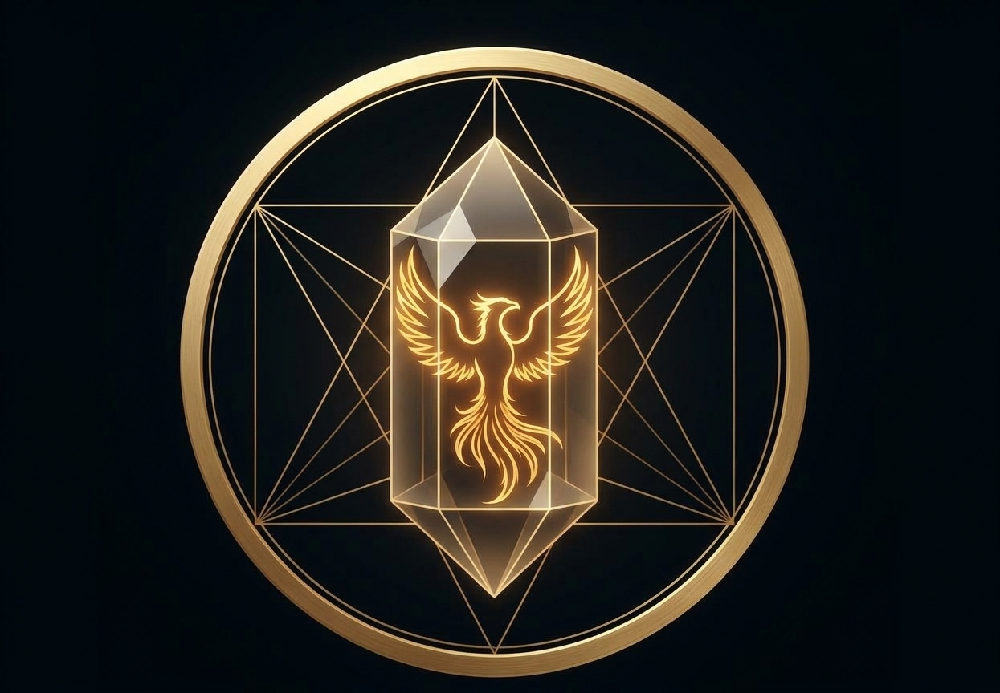
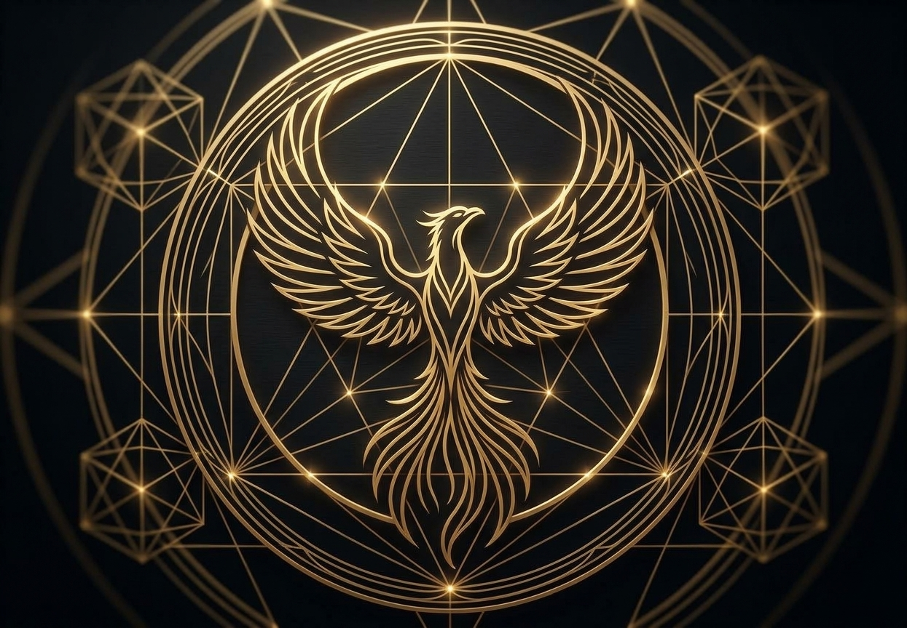
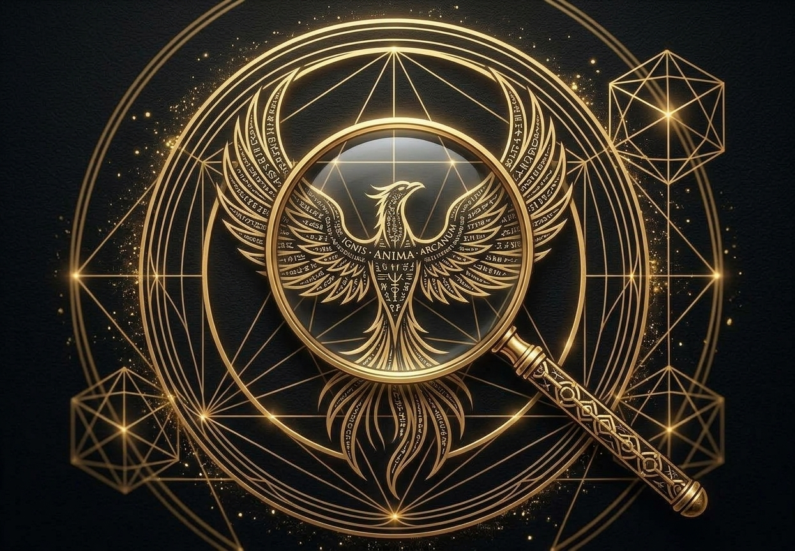
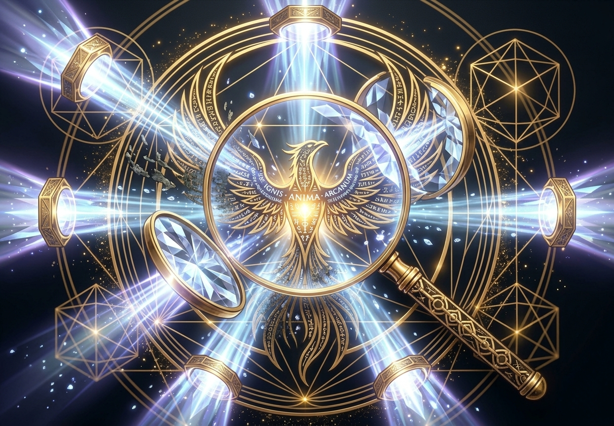
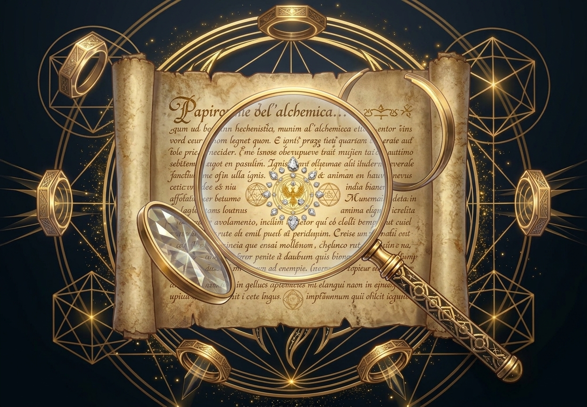

Limpieza energética a distancia con cristales de cuarzo. Un espacio de renovación para hombres y mujeres de 30 a 50 años que atraviesan un momento de quiebre y buscan volver a empezar.
Iniciar mi renovaciónHay etapas de la vida donde las crisis profesionales, de pareja o personales nos saturan. Te sentís cansado/a, bloqueado/a, y por más que lo intentás, las cosas no fluyen.
El estrés y las crisis bloquean tu flujo vital. No estás solo/a.


Así como el ave fénix transmuta las cenizas en fuerza, las sesiones de armonización con cristales de cuarzo limpian las frecuencias densas de tu campo áurico. Trabajamos a nivel vibracional para disolver bloqueos y devolverte la vitalidad, sin importar en qué parte del mundo te encuentres.
¿Por qué a distancia? La energía no entiende de fronteras ni de kilómetros. Los cuarzos actúan como amplificadores y conductores puros: recibís la sintonía y la sanación desde la comodidad y privacidad de tu hogar.

Agendás tu sesión online y me contás brevemente qué área de tu vida sentís más afectada o qué crisis estás atravesando.

En el día y hora acordados, realizo la limpieza con una red de cuarzos programados para tu frecuencia actual. Solo necesitás estar en un espacio tranquilo.

Al finalizar te envío un reporte con lo trabajado, los bloqueos liberados y recomendaciones prácticas para mantener tu energía en alta vibración.
Cada persona es un universo y las sensaciones varían.
Algunos sienten un calor suave, un sutil hormigueo, ganas de respirar profundo o una relajación tan intensa que se quedan dormidos.
Lo más común es una profunda sensación de ligereza, como si te hubieras quitado una mochila pesada de encima, con mucha claridad mental.
Puede aparecer un “cansancio de descarga”: es el cuerpo procesando la liberación del estrés acumulado.
Te acompaño a transmutar la crisis en fuerza, como el fénix. [Tu Nombre/Marca].
Para notar un cambio ante una crisis aguda (un divorcio, un quiebre profesional, un duelo o un agotamiento extremo) recomiendo un ciclo de 3 sesiones, separadas por 15 o 21 días. Así desmantelamos las capas más profundas del estancamiento, sellamos el campo áurico y consolidamos tu renacimiento. El alivio y la claridad se sienten desde la primera sesión.
¿Cuánto cuesta una sesión?La energía no está limitada por el tiempo ni por el espacio físico. En la sanación vibracional se entiende que todo es frecuencia e información. Los cuarzos actúan como amplificadores y conductores de esa energía. Con tu nombre completo, fecha de nacimiento y los datos de tu diagnóstico, abro un canal de sintonía directa con tu campo áurico para limpiar y ordenar tus centros energéticos, estés donde estés.
No es necesario. Las sesiones remotas se realizan de forma offline, en el día y horario pautados, para que tengas un espacio de introspección libre de pantallas. No necesitás interrumpir tu jornada ni forzar una conversación frente a la cámara.
Durante la sesión, calor suave, hormigueo o relajación profunda. Después, ligereza y claridad mental. En algunos casos hay un cansancio de descarga durante las primeras 24 horas.
Vas a sentir alivio y renovación desde la primera sesión. Ante crisis agudas recomendamos un ciclo de 3 sesiones, separadas por 15 o 21 días.
Transformá tu energía y recuperá tu claridad. El primer paso es reservar tu sesión.
Reservar mi sesión